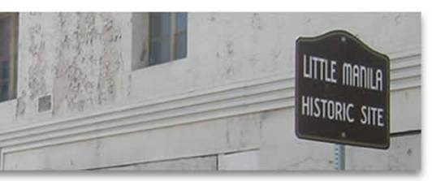

Creating Cultural Space: Philippine American Cultural Center of Michigan (PACCM)

Filipinx Community Space in Southfield
Description
Michigan’s only official Filipinx community center sits quietly on Southfield’s Northland Park Court, a street away from the bustling traffic on 8 Mile Road and blocks away from the John C. Lodge freeway which once cut through Detroit’s old Chinatown. On the east end of Northland Park, the street sign is affixed with a smaller sign that reads “Philippines St.,” a declaration awarded from the city a year after the center’s 2001 opening. The dedication of this street and community space was a long and hard-won battle, one Eduardo Navarra states during the center’s grand opening ceremony began as early as the 1930s, when “the pursuit for a place to congregate, a home away from home, was only a dream.”
This pursuit of place was handed off from generation to generation of committed Filipinx community members and key leaders. Efforts started from such visionaries as Marcellano “Bene” Benemerito, the leaders behind the surge of community organizations of the 60’s and 70’s, and the staunch fundraising efforts of the 80’s and 90’s, until Philippine American Cultural Center of Michigan (PACCM) officially opened in 2001. Though Michigan’s current Filipinx community can finally enjoy a place to congregate thanks to decades of struggles from the Fil-Ams who came before, a mix of new and senior leaders continue the hard work of sustaining the community space (See the timeline below for a more detailed history of the center’s establishment).
Sundays are generally active days for PACCM; the Paaralang Pilipino program conducts its language and history classes, the Filipino Youth Initiative holds its weekly meetings, PACCM leaders teach dance or the ukulele, and groups of families generally congregate in the main room. In line with PACCM’s mission statement to “promote, advance and preserve the Filipino culture, traditions, values and heritage,” they offer a variety of services including:
- Health and Wellness Expo which provides health screenings for people without health insurance coverage.
- Senior programs by the National Alliance to Nurture the Aged and the Youth (NANAY) – charitable arm of PACCM committed to providing psychological, health and emotional support for the youth and the elders 60 yrs of age and older.
- Consulate on wheels – outreach service provided by the Philippine Consulate where they travel to Michigan to renew passports, process dual citizenship and other notarial services so applicants are spared the time traveling to Chicago.
- Enrichment classes.
- Honoring graduates with dinner reception and awarding of certificates for their accomplishments.
Ethnic heritage sites, organizations, and community centers such as PACCM play a key role in urban APIA representation. They create cultural community spaces that serve as avenues for correcting racial misconceptions, providing often invisible multi-ethnic histories of an area, preserving cultural legacy, cultivating community solidarity, and contributing to local economic and community development.
History of PACCM's Establishment
1970's - present
The Challenges of Creating Urban Cultural Space
A Closer Look

Source: The Little Manila Foundation
Upon visiting PACCM, the drive in seems deceptively quiet: the stillness of Philippines Street assumes inactivity, and the reflective panes of PACCM’s front windows only mirror back this stillness. It’s not until one reaches the parking lot behind PACCM that a line of cars betrays the presence of community. Another sign: an entrance awning donated from philanthropist and center’s previous president Dr. Ernestina De Los Santos-Mac, and side panels donated by other leaders Rebecca Tungol, Alex and Buenaflor Sitchon, and Roberto and Millie Barretto.
Many of the added features of the building are donated by prominent Filipinx seniors in the community; everything from the computers, library, artifacts, and furniture are personally donated. Inside, many of these Filipinx leaders donate their time, as well. The kitchen is almost always occupied with a helping hand to make or distribute food to students and visitors, a typical demonstration of the Filipinx values of feeding (and perhaps over-feeding) one’s guests. The board members, including President Tungol, Fred Porte, Tony Kho, James Wilson, previous President Dr. Ernestina Mac, among other leading members, are often seen greeting the regulars, dancing or playing with the students, and occasionally descending into the back office to continue the difficult work of generating funds to keep the center operating.
“We want to keep this place a home for the community where Fil-Ams can gather,” says Vice President Fred Porte. In order to do so, the center has opened their space for different organizations, many of them Filipinx American affiliated medical groups, who would sponsor PACCM’s services and raise funds for the community. PACCM’s services also extend through FILAMCCO Foundation, what Dr. Mac refers to as “the charitable arm of PACCM.” Along with the Mac family which continues to play an indispensable role in providing financial resources for the center, the majority of funds rely on PACCM’s two events: the annual Valentines Ball and annual golf tournament.
Nonetheless, rising building and program expenditures mixed with a struggle to generate newer and younger community leaders has made the task of sustaining the center one heavily resting on the shoulders of the senior members and local donations. In this sense, Philippine Street exhibits the insulated, community-run entity which it houses. Though funding to sustain operations is a common challenge for ethnic spaces, PACCM’s history also points to the difficulty of securing buildings in light of city zoning policies, such as the zoning regulations that prevented the initial Rochester Hills location. Zoning laws have sometimes served as an impediment to the visibility and establishment of community spaces within the public sphere, tending to lean toward market capital space.
As PACCM nears its 35th anniversary in 2018, it continues to welcome the old and new: the Filipinx youth eager to learn the cultural ways, language, and customs and the elders eager to pass them on; local Filipinx Michiganders in search for that other sense of “home”; and community members hoping to experience the richness of Michigan’s array of cultures. PACCM provides a history and a lineage for the Filipinx community and Michigan’s cities.
To support PACCM or get involved, visit their website, like the Facebook page, or pay a visit to the center at 17356 Northland Park Ct, Southfield, MI 48075.